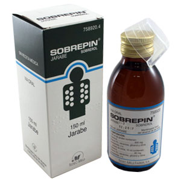
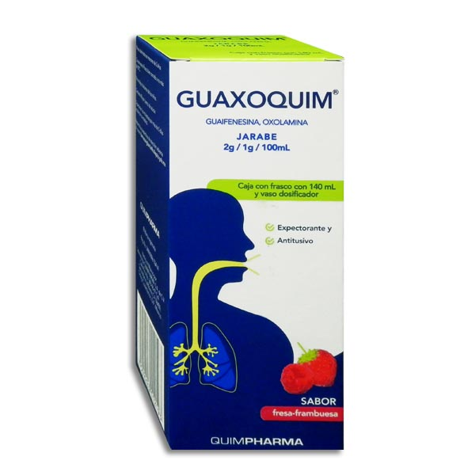

Mecanismo de Acción
- Reflejo: Estimula los receptores vagales gástricos, aumentando la secreción de las vías respiratorias y reduciendo la viscosidad del moco, Aumentan la secreción acuosa de las glándulas respiratorias por acción refleja.
- Directo: Aumenta la producción de moco seroso y mejora el transporte mucociliar, facilitando la expectoración. Estimula la producción de surfactante pulmonar y mejora el aclaramiento mucociliar.
Indicaciones Terapéuticas
- Reflejo: Tos productiva, bronquitis, resfriado común. Expectorante en formulaciones para la tos. Afecciones respiratorias con moco espeso
- Directo: Bronquitis aguda y crónica, asma bronquial, neumonías. Enfermedades respiratorias con moco espeso: bronquitis, EPOC. traqueobronquitis
Contraindicaciones
- Reflejo: Hipersensibilidad al fármaco; precaución en embarazo y lactancia. Trastornos tiroideos, embarazo, lactancia
- Directo: Hipersensibilidad, úlcera gástrica activa, embarazo (primer trimestre).
Posología
- Reflejo
- Guaifenesina: Jarabe (20 mg/ml), tabletas. Adultos y niños >12 años: 200-400 mg cada 4 horas; no exceder 2.4 g/día.
- Ipecacuana:Extracto líquido, jarabes combinados. Dosis bajas en formulaciones combinadas; seguir indicaciones específicas del producto.
- Yoduros (Yoduro potásico/sódico): Solución oral, tabletas. 1-1.5 g por vía oral, 3 veces al día.
- Directo
- Directo: Bromhexina: Jarabe (4 mg/5 ml, 8 mg/5 ml), tabletas, gotas. Adultos y niños >12 años: 8-16 mg 3 veces al día; niños 6-12 años: 4 mg 3 veces al día.
- Ambroxol: Jarabe, tabletas, gotas pediátricas. Adultos: 30 mg 3 veces al día; niños 6-12 años: 15 mg 2-3 veces al día; niños 2-5 años: 7.5 mg 3 veces al día.
- Sobrerol: Jarabe, solución oral. Adultos: 100 mg cada 6-8 horas o 15 ml cada 12 horas; niños >2 años: 10 ml cada 12 horas; niños ≤2 años: 5 ml cada 12 horas.
Reacciones adversas
- Reflejo: Náuseas, vómitos, dolor de cabeza, somnolencia, diarrea. Molestias gastrointestinales, alteraciones tiroideas con uso prolongado
- Directo: Náuseas, vómitos, diarrea, reacciones alérgicas, disgeusia
Interacciones medicamentosas
- Reflejo: Puede interferir con pruebas de laboratorio (ácido 5-hidroxiindolacético y ácido vanilmandélico en orina). Puede interferir con pruebas de función tiroidea.
- Directo: No asociar con antitusivos; puede aumentar niveles de antibióticos en secreciones bronquiales. Potencia la acción de ciertos antibióticos en el tejido pulmonar.
Presentacións
- Reflejo
- Guaifenesina: Guaxoquim®Jarabe (20 mg/ml), tabletas.
- Ipecacuana:Extracto líquido, jarabes combinados
- Yoduros (Yoduro potásico/sódico): Solución oral, tabletas.
- Directo
- Bromhexina: Jarabe (4 mg/5 ml, 8 mg/5 ml), tabletas, gotas.
- Ambroxol: Jarabe, tabletas, gotas pediátricas
- Sobrerol: Sobrepin® Jarabe, solución oral.